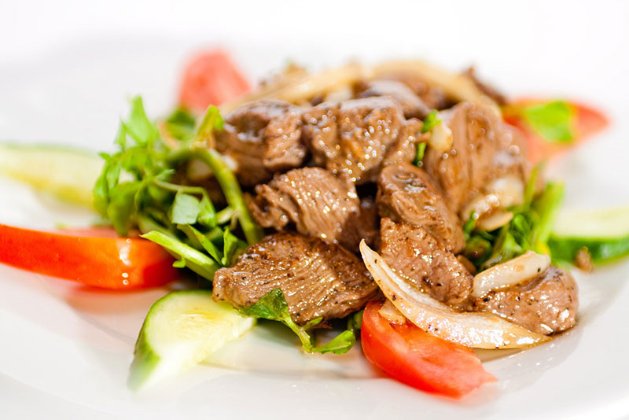
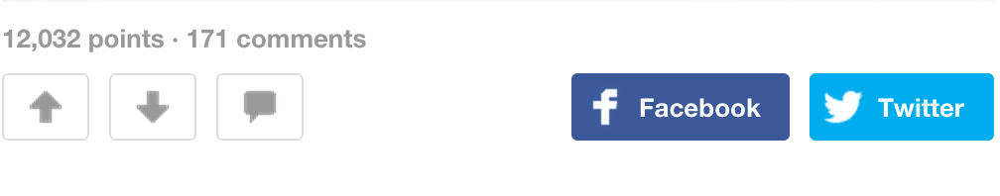
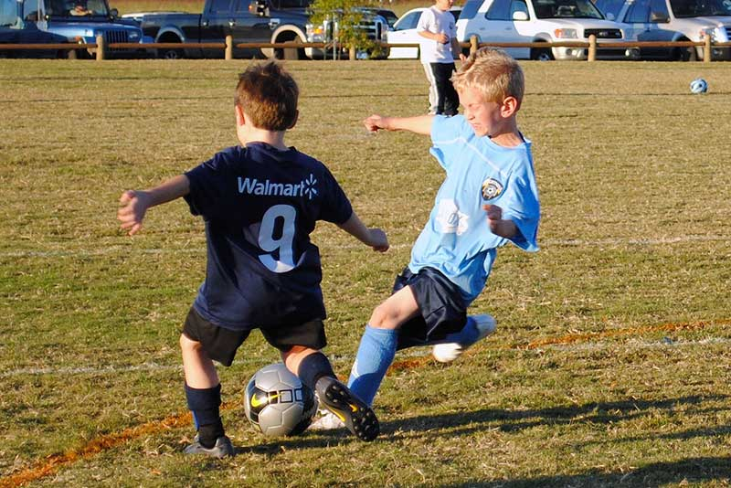

This is a Post


1. Link to CSS file
<link rel="stylesheet" type="text/css" href="css/jquery.hungryscroller.css">
This is a Post
2. Link to jQuery
<script type="text/javascript" src="https://ajax.googleapis.com/ajax/libs/jquery/1.10.2/jquery.min.js"></script>
This is a Post
3. Link to Mousetrap (for keybindings):
<script type="text/javascript" src="js/mousetrap.min.js"></script>
This is a Post
4. Link to HungryScroller:
<script type="text/javascript" src="js/hungryscroller.js"></script>
This is a Post
5. Include HungryScroller in HTML:
<ul class="scroller">
<li class="scroll">Start Scroll</li>
<ul class="speeds">
<li class="slow">Famished-Slow</li>
<li class="med">Peckish-Med</li>
<li class="fast">Bite Size-Fast</li>
</ul>
</li>
</ul>
This is a Post
6. Add the discrete munchkin images and audio:
<audio id="munch" src="audio/muncha.mp3" type="audio/mp3"></audio>
<img src="img/munch1.png" alt="" class="munch munch-top">
<img src="img/munch2.png" alt="" class="munch munch-bottom">
(Triggered by typing: "m u n c h")
This is a Post
7. Call HungryScroller and adjust speed settings:
$(function(){
$('body,html').hungryscroller({
slowSpeed: 25000, //scrolls through the page in 25 seconds
medSpeed: 12000, //scrolls through the page in 12 seconds
fastSpeed: 8000 ////scrolls through the page in 8 seconds
});
});
This is a Post
